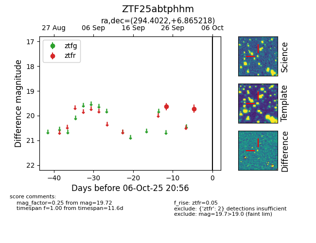

FINK: ZTF25abtphhm
Lasair: ZTF25abtphhm
ALeRCE: ZTF25abtphhm
ZTF25abtphhm (ztf,fink)
equatorial (ra, dec) = (294.4022,+6.86522)
galactic (l, b) = (44.3789,-7.02500)

last ztfr=19.72
2 ztfr detections